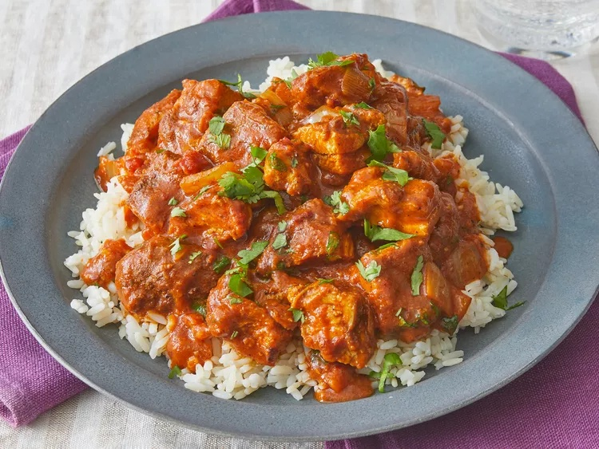

Chicken Tikka Masala

This recipe offers a delicious way to prepare Chicken Tikka Masala, a popular Indian dish featuring marinated chicken in a spiced tomato cream sauce.
Ingredients:
- Chicken: Boneless, skinless chicken breasts or thighs.
- Yogurt and Spices: For marinating the chicken (yogurt, lemon juice, ginger, garlic, garam masala, chili powder, cumin).
- Sauce: Tomato sauce, cream, butter, garlic, ginger, and a blend of spices (garam masala, cumin, paprika, salt).
Instructions:
- Marinate the Chicken: Mix yogurt, lemon juice, and spices. Add chicken, coat well, and marinate for at least 1 hour.
- Cook the Chicken: Grill or bake the marinated chicken until fully cooked.
- Prepare the Sauce: In a large pan, sauté garlic and ginger in butter. Add tomato sauce and spices, simmer, then stir in cream.
- Combine and Simmer: Add cooked chicken to the sauce and simmer for a few minutes until flavors meld together.
Home